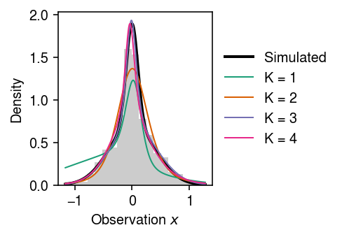

Normalizing flows for EBPM
Table of Contents
Introduction
Fitting an expression model to observed scRNA-seq data at a single gene can be thought of as solving an empirical Bayes problem (Sarkar and Stephens 2020). \( \DeclareMathOperator\Pois{Poisson} \DeclareMathOperator\E{E} \DeclareMathOperator\N{\mathcal{N}} \newcommand\abs[1]{\left\vert #1 \right\vert} \)
\begin{align} x_i \mid s_i, \lambda_i &\sim \Pois(s_i \lambda_i)\\ \lambda_i &\sim g(\cdot) \in \mathcal{G}, \end{align}where \(i = 1, \ldots, n\) indexes samples. Assuming \(\mathcal{G}\) is the family of Gamma distributions yields analytic gradients and admits fast implementation on GPUs. However, the fitted model can fail to accurately describe variation at some genes.
In contrast, the non-parametric family of unimodal distributions (Stephens 2016) could be sufficient for all but a minority of genes. In practice, this family is approximated as the family of mixture of uniform distributions with fixed endpoints, including the common mode. Then, inference in this model can be achieved by a combination of convex optimization (over mixture weights, given the mode) and line search (over the mode, as an outer loop). However, in practice this approach is expensive and cumbersome for large data sets.
One idea which could bridge the gap between these approaches (in both computational cost and flexibility) is normalizing flows (reviewed in Papamakarios et al. 2019). The key idea of normalizing flows is to apply a series of invertible, differentiable transformations \(T_1, \ldots, T_K\) to a tractable density, in order to obtain a different density
\begin{equation} f_x(x) = f_u(u) \prod_{k=1}^{K} \det \abs{J_k(\cdot)}, \end{equation}where \(J_k\) is the Jacobian of \(T_k^{-1}\). (This choice makes it easy to evaluate the density \(f_x\), but difficult to sample from it.) If the \(T_k\) have free parameters, gradients with respect to those parameters are available, allowing the transformations to be learned from the data. Here, we investigate using flows to define a flexible family of priors, and use that family to fit expression models to scRNA-seq data.
Setup
import numpy as np import scipy.stats as st import torch import torch.utils.tensorboard as tb
%matplotlib inline %config InlineBackend.figure_formats = set(['retina'])
import matplotlib.pyplot as plt plt.rcParams['figure.facecolor'] = 'w' plt.rcParams['font.family'] = 'Nimbus Sans'
Methods
Normalizing flow for density estimation
Suppose we have observations \(x_1, \ldots, x_n\) drawn from \(f^*\). One can estimate \(f_x\) by maximizing the likelihood of the data
\begin{align} &\max_{f_x} \E_{f^*}[\ln f_x(x)]\\ = &\max_{T_1, \ldots, T_K} \E_{f^*}\left[\ln f_u(T(x)) + \sum_{k=1}^K \ln\det J_k(\cdot)\right], \end{align}where \(T = T_K \circ \cdots \circ T_1\) is the inverse mapping from \(x \in \mathcal{X} \rightarrow u \in \mathcal{U}\). This optimization problem can be readily solved using automatic differentiation and gradient descent.
Normalizing flow for empirical Bayes
Now consider the EBPM problem
\begin{align} x_i \mid s_i, \lambda_i &\sim \Pois(s_i \lambda_i)\\ \lambda_i &\sim g(\cdot) = g_0(\cdot) \prod_k \det \abs{J^g_k} \end{align}where \(i = 1, \ldots, n\), and \(g_0(\cdot) = \N(\cdot; 0, 1)\) for simplicity. One can estimate \(g\) by maximizing the marginal likelihood
\begin{align} &\max_g \sum_i \ln p(x_i \mid s_i, g)\\ = &\max_{g, q} \E_{\lambda_i \sim q}\left[\sum_i \ln p(x_i | s_i, \lambda_i) + \ln g(\lambda_i) - \ln q(\lambda_i)\right]\\ = &\max_{T_g, q} \E_{\lambda_i \sim q}\left[\sum_i \ln p(x_i | s_i, \lambda_i) + \ln g_0(T_g(\lambda_i)) + \sum_k \ln\det\abs{J^g_k} - \ln q(\lambda_i)\right]\\ \end{align}where \(T_g = T^g_K \circ \cdots \circ T^g_1\) maps \(g\) to a base measure and \(J^g_k\) denotes the Jacobian of \(T^g_k\). It is straightforward to show that, holding \(g\) fixed, the optimal \(q\) is the true posterior \(p(\lambda_i \mid x_i, s_i, g)\) (e.g., Neal and Hinton 1998). In order to ensure \(q\) is flexible enough to capture the true posterior, suppose it too is represened by a normalizing flow
\begin{equation} q(\cdot) = q_0(\cdot) \prod_k \det\abs{J^q_k}, \end{equation}where \(J^q_k\) denotes the Jacobian of the transform \(T^q_k\). In order to make sampling easy, suppose \(T_q = T^q_K \circ \cdots \circ T^q_1\) maps the base measure \(q_0(\cdot) = \N(\cdot; 0, 1)\) to \(q\). Then, the optimization problem is
\begin{equation} \max_{T_g, T_q} \E_{u_i \sim q_0}\left[\sum_i \ln p(x_i | s_i, T_q(u_i)) + \ln g_0(T_g(T_q(u_i))) + \sum_k \ln\det\abs{J^g_k} - \ln q_0(u_i) - \sum_k \ln\det\abs{J^q_k}\right]. \end{equation}Since \(T_g, T_q\) are differentiable, this problem can be solved by replacing the expectation with a Monte Carlo integral (e.g., Kingma and Welling 2014), and then using automatic differentiation and gradient descent to optimize the resulting stochastic objective.
Remark: When reducing problems in scRNA-seq data analysis to EBPM, we are primarily interested in the estimated prior \(\hat{g}\). Depending on the choice of flow, obtaining expectations with respect to \(\hat{g}\) might be difficult.
Results
Example of normalizing flow
Draw data from a scale mixture of Gaussians.
rng = np.random.default_rng(1) n = 1000 pi = np.array([0.3, 0.7]) scale = np.array([0.1, 0.4]) z = rng.uniform(size=(n, 1)) < pi[0] x = rng.normal(scale=scale @ np.hstack([z, ~z]).T)
cm = plt.get_cmap('Dark2') plt.clf() plt.gcf().set_size_inches(2.5, 2.5) plt.hist(x, bins=19, density=True, color='0.7') grid = np.linspace(x.min(), x.max(), 5000) mixcdf = st.norm(scale=scale).cdf(grid.reshape(-1, 1)) @ pi plt.plot(grid[:-1], np.diff(mixcdf) / (grid[1] - grid[0]), lw=1, c='k') plt.xlabel('Observation') plt.ylabel('Density') plt.tight_layout()
class PlanarFlow(torch.nn.Module): # Rezende and Mohamed 2015 def __init__(self, n_features): super().__init__() self.weight = torch.nn.Parameter(torch.zeros([n_features, 1])) torch.nn.init.xavier_normal_(self.weight) self.bias = torch.nn.Parameter(torch.zeros([1])) self.post_act = torch.nn.Parameter(torch.zeros([n_features, 1])) torch.nn.init.xavier_normal_(self.post_act) def forward(self, x): # x is [batch_size, n_features] pre_act = x @ self.weight + self.bias # This is required to invert the flow post_act = self.post_act + self.weight / (self.weight.T @ self.weight) * (-1 + torch.nn.functional.softplus(self.weight.T @ self.post_act) - self.weight.T @ self.post_act) out = x + torch.sigmoid(pre_act) @ post_act.T log_det = torch.log(torch.abs(1 + torch.sigmoid(pre_act) * torch.sigmoid(-pre_act) @ self.weight.T @ post_act)) assert not torch.isnan(log_det).any() return out, log_det class NormalizingFlow(torch.nn.Module): # https://pytorch.org/docs/stable/_modules/torch/nn/modules/container.html#Sequential def __init__(self, flows): super().__init__() self.flows = torch.nn.ModuleList(flows) def forward(self, x): log_det = torch.zeros(x.shape) for f in self.flows: x, l = f.forward(x) log_det += l return x, log_det class DensityEstimator(torch.nn.Module): def __init__(self, n_features, K): super().__init__() # Important: here the flow maps x in ambient measure to u in base measure self.flow = NormalizingFlow([PlanarFlow(n_features) for _ in range(K)]) def forward(self, x): loss = -self.log_prob(x).mean() assert loss > 0 return loss def fit(self, x, n_epochs, log_dir=None, **kwargs): if log_dir is not None: writer = tb.SummaryWriter(log_dir) opt = torch.optim.RMSprop(self.parameters(), **kwargs) global_step = 0 for _ in range(n_epochs): opt.zero_grad() loss = self.forward(x) if log_dir is not None: writer.add_scalar('loss', loss, global_step) if torch.isnan(loss): raise RuntimeError loss.backward() opt.step() global_step += 1 return self def log_prob(self, x): u, log_det = self.flow.forward(x) l = torch.distributions.Normal(loc=0., scale=1.).log_prob(u) + log_det return l
K = 2 run = 0 lr = 1e-2 n_epochs = 4000 torch.manual_seed(run) m = (DensityEstimator(n_features=1, K=K) .fit(torch.tensor(x.reshape(-1, 1), dtype=torch.float), n_epochs=n_epochs, lr=lr, log_dir=f'/scratch/midway2/aksarkar/singlecell/runs/nf-{K}-{lr}-{n_epochs}-{run}'))
Plot the fit.
grid = np.linspace(x.min(), x.max(), 5000) mixcdf = st.norm(scale=scale).cdf(grid.reshape(-1, 1)) @ pi with torch.no_grad(): flow = np.exp(m.log_prob(torch.tensor(grid.reshape(-1, 1), dtype=torch.float)).numpy()) cm = plt.get_cmap('Dark2') plt.clf() plt.gcf().set_size_inches(3.5, 2.5) plt.hist(x, bins=19, density=True, color='0.7') plt.plot(grid[:-1], np.diff(mixcdf) / (grid[1] - grid[0]), lw=1, c='k', label='Simulated') plt.plot(grid, flow, lw=1, c='r', label='Fit') plt.legend(frameon=False, loc='center left', bbox_to_anchor=(1, .5)) plt.xlabel('Observation') plt.ylabel('Density') plt.tight_layout()
